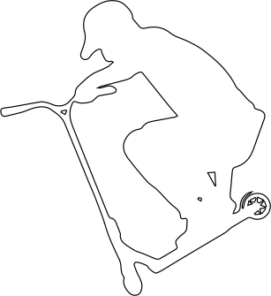
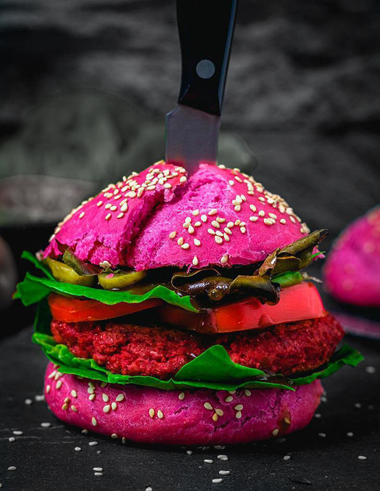
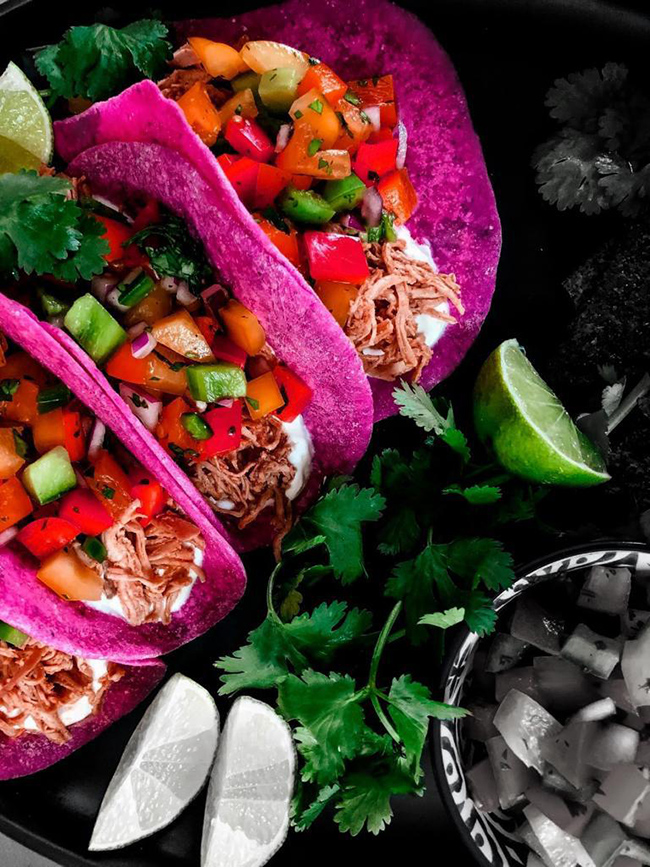
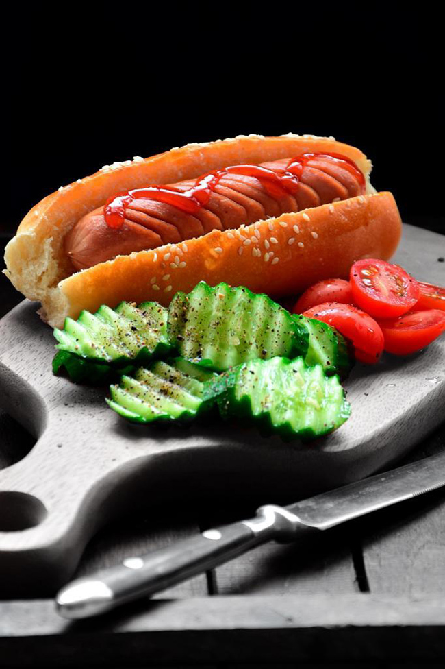
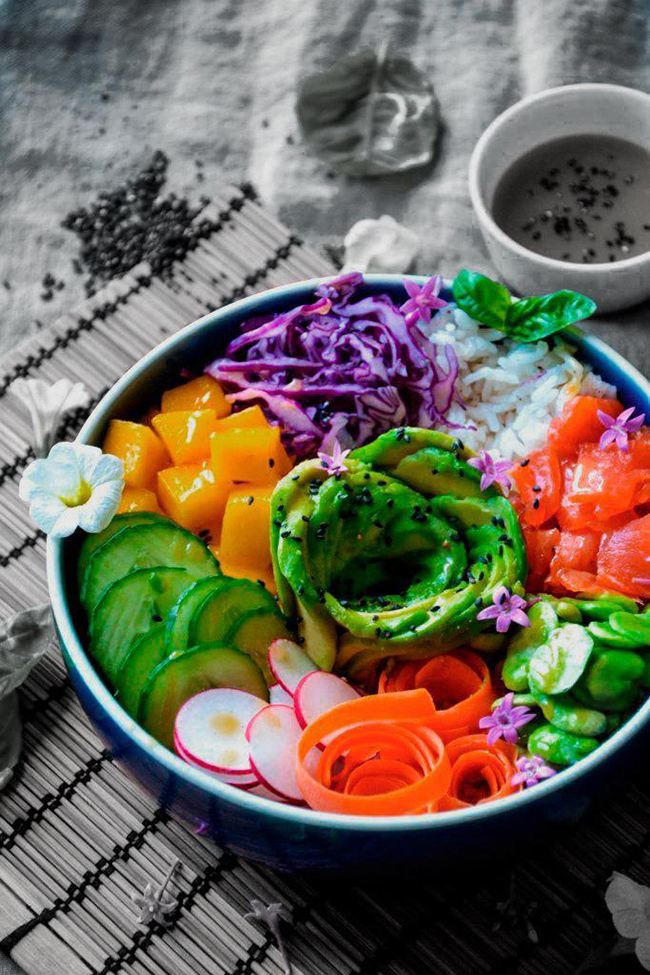
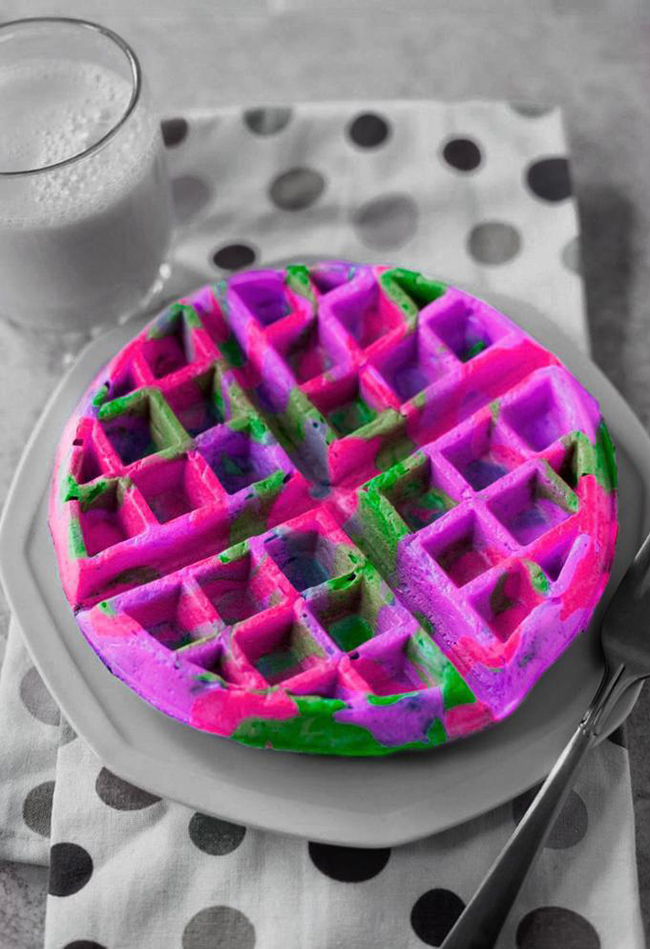
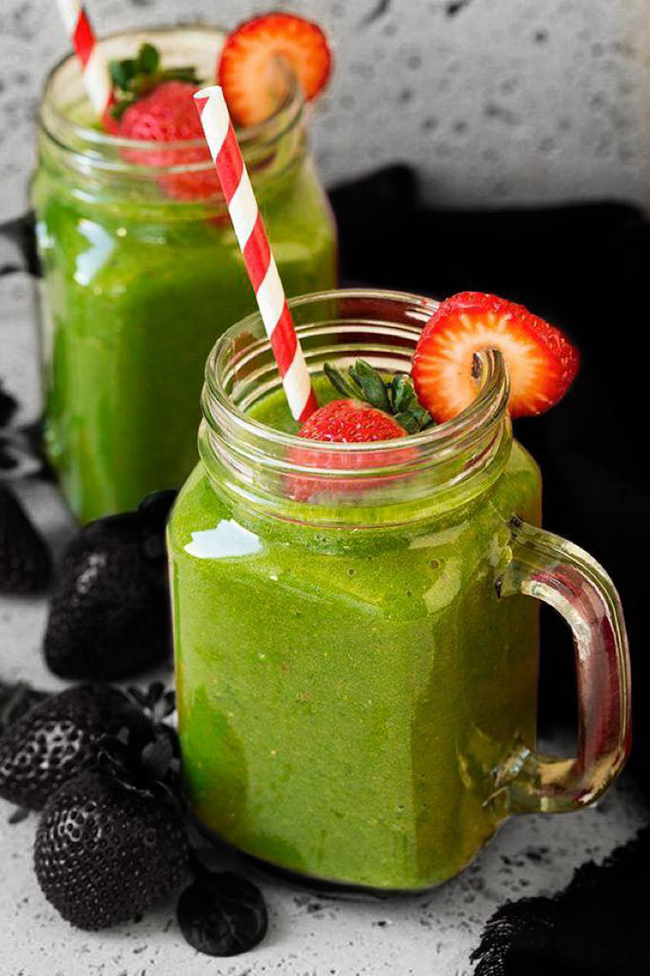

street jam festival
Le 15 octobre 2023, Vevey célèbre les tendances actuelles en matière
d'art urbain et de musique, et rassemble une communauté de personnes
partageant les mêmes intérêts.
Notre événement offre une
variété d'activités pour les visiteurs, notamment des démonstrations
de skate réalisées par des professionnels, des ateliers de graffitis
interactifs, des expositions d'oeuvres d'art urbain innovantes et des
performances musicales d'artistes locaux et internationaux.
Notre objectif est de créer un espace pour que les artistes de rue et
les amateurs de culture urbaine puissent se rencontrer, partager leur
savoir-faire et leur passion pour l'art urbain et s'immerger dans une
ambiance urbaine unique.
Notre festival propose également une
sélection de stands de restauration proposant une cuisine de rue
authentique pour ravir les papilles des visiteurs.
tags / graffitis / street art
09h00 - 11h00
Sessions libres
10h00 - 12h00
Workshop de trottinette freestyle avec Mister Flow
13h30 - 17h00
Démonstration de Manos68 et sessions libres
mister flow

mister flow le 03.06.23, fribourg
Nous sommes ravis de présenter notre invitié d'honneur pour le
STREET JAM FESTIVAL, le célèbre rider Mister Flow.
Originaire d'Avenches (VD), Mister Flow a commencé à expérimenter
avec les trottinettes à l'âge de 14 ans et a depuis créé une
réputation internationale pour son style unique et dynamique. Son
travail est influencé par la culture du skate, la street culture et
l'art urbain contemporain, et est souvent caractérisé par des tricks
sur barres, des drifts et des cascades d'adrénaline.
Mister
Flow est une figure emblématique de la scène du freestyle, et son
travail a été présenté dans des spectacles du monde entier. En plus
de son travail de rider, il est également un mentor pour la jeune
génération de riders urbains, organisant des workshops et partageant
son expérience avec la communauté.
Nous sommes honorés
d'accueillir Mister Flow en tant qu'invité d'honneur de notre
festival urbain annuel et nous sommes impatients de voir son talent
en action lors de notre workshop de trottinette freestyle. Les
participants auront l'occasion d'apprendre directement de lui, de
découvrir son processus d'apprentissage et de s'inspirer de son
travail unique.
skate
09h00 - 10h00
Inscriptions et accueil des participants
10h00 - 10h30
Démo de skate par des professionnels
10h30 - 11h30
Atelier d'initiation au skate pour les débutants
11h30 - 12h30
Session de skate libre pour les participants
12h30 - 13h30
Pause
13h30 - 14h00
Concours de skate «meilleure figure» pour les participants
14h00 - 15h00
Session de skate libre pour les participants
15h00 - 15h30
Démo de skate par des professionnels
15h30 - 16h30
Atlier de skate «street style» pour les skateurs expérimentés
16h30 - 17h00
Remise des prix pour le concours «meilleure figure»
17h00
Fin de la journée
Veuillez noter que les horaires sont donnés à titre indicatif et peuvent être sujets à des changements. Les participants seront informés des horaires définitifs lors de leur inscription à l'événement.
musique
15h00 - 17h00
Atlier de musique pour les amateurs de beatmaking & rap
17h00 - 23h00
Concert de hip-hop avec des artistes locaux et nationaux
00h00
Fin de la journée
street food
Notre festival vous propose une variété de stands de restauration sur place tout au long de la journée. Vous pourrez notamment découvrir :
oh my b !
Un camion de restauration rapide proposant des burgers artisanaux avec des ingrédients frais et locaux.
con cilantro wey
Un stand proposant des tacos et des burritos à la viande grillée ou végétarienne, accompagnes de guacamole, de salsa et de sauces épicées.
frankie's hot dogs
Un stand proposant des hot-dogs traditionnels, avec une variété de garnitures et des frites fraîches et croustillantes.
poke paradise
Un stand proposant des bols de poke hawaïen, avec du poisson frais, du riz, des légumes, des fruits et des sauces savoureuses.
la bretagne ambulante
Un stand proposant des crêpes et des gaufres sucrées ou salées, avec une variété de garnitures comme des fruits frais, du Nutella, du fromage, des oeufs et des légumes.
smoothies stop
Un stand proposant des smoothies et des jus de fruits frais, avec des mélanges de saveurs originales et saines pour une pause rafraîchissante.